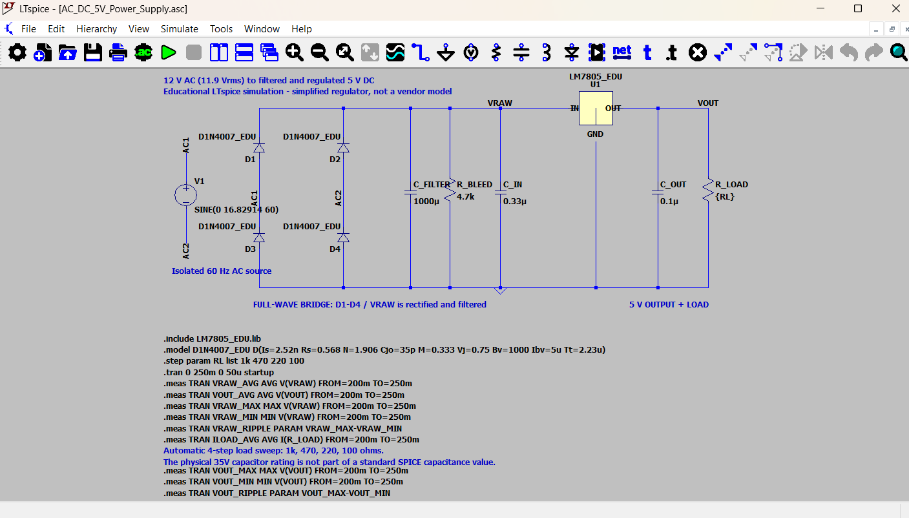
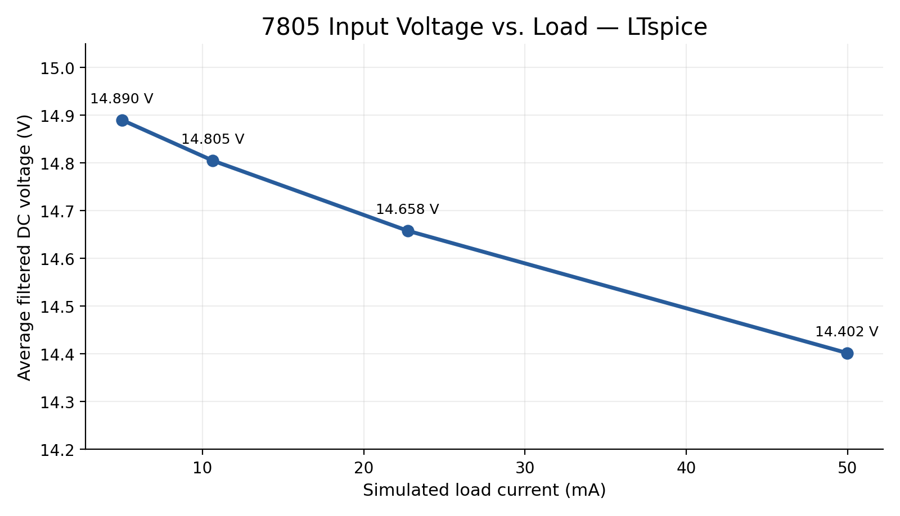
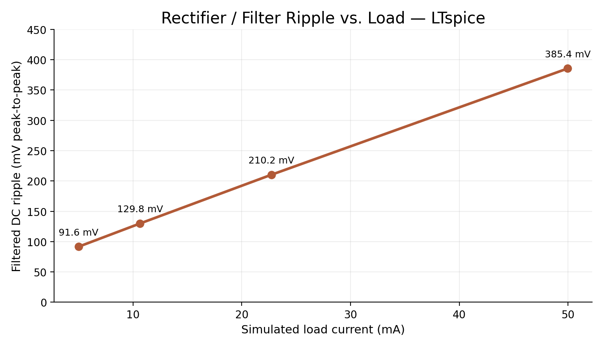
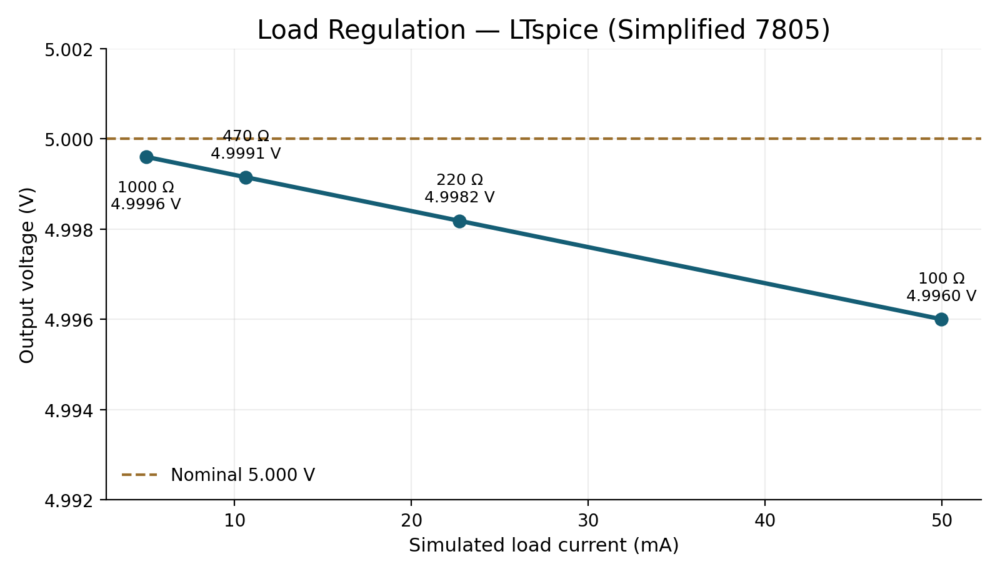
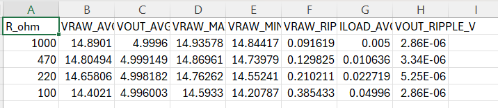

PROJECT OVERVIEW
12 VAC → Regulated 5 VDC
The objective of this project was to design and analyze the complete conversion chain required to turn a low-voltage AC source into a stable DC supply.
CIRCUIT DESIGN
LTspice Schematic

A full-wave bridge rectifier converts both halves of the AC input waveform into pulsating DC.
A bulk filter capacitor smooths the rectified waveform before it enters the LM7805 linear regulator. The regulator then maintains an output near 5 V.
INPUT
AC Input Voltage

The nominal 12 V AC source is specified using its RMS value. The peak sinusoidal voltage is therefore greater than 12 V before accounting for diode losses.
FILTERING
Ripple Behavior

After rectification, the filter capacitor charges near the waveform peaks and supplies current to the load between peaks.
As load current increases, the capacitor discharges more between charging cycles, which increases ripple and lowers the average unregulated DC voltage.
LOAD SWEEP
Regulation Across Four Loads

The LTspice load sweep tested the supply with 100 Ω, 220 Ω, 470 Ω, and 1 kΩ output loads.
The average raw DC voltage decreased as the output load became heavier while the regulator maintained the output near the target voltage.
SIMULATION RESULTS
Raw DC Bus

ENGINEERING TAKEAWAYS
Power Conversion Tradeoffs
The project demonstrates how rectification, filtering, regulation, and load current interact in a complete power supply rather than as isolated circuit concepts.
It also illustrates the main tradeoff of a linear regulator: excellent simplicity and output regulation at the cost of dissipating the excess input voltage as heat.